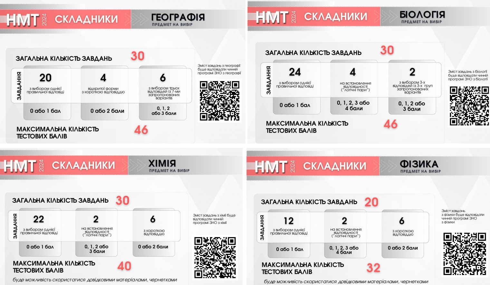
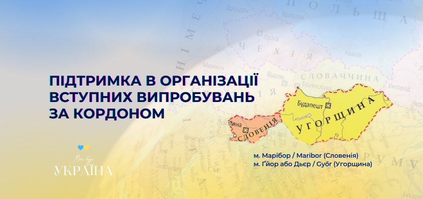
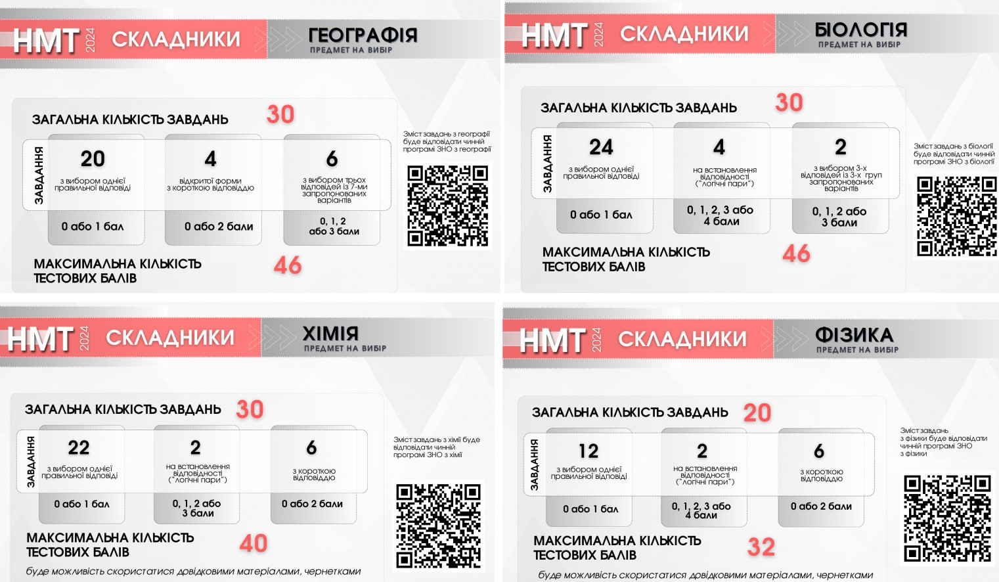
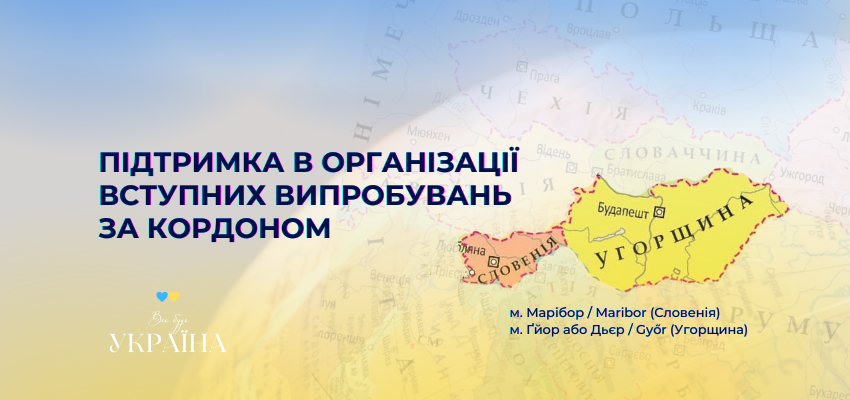

ЗАГАЛЬНА ІНФОРМАЦІЯ
Зовнішнє оцінювання проводиться з метою забезпечення прав осіб на рівний доступ до вищої освіти та оцінювання відповідності результатів навчання, здобутих на основі повної загальної середньої освіти, державним вимогам.
Участь у зовнішньому оцінюванні може взяти особа, яка має повну загальну середню освіту або здобуде її в поточному навчальному році та зареєструвалася відповідно до встановлених вимог.
Зовнішнє оцінювання проводиться щороку з використанням технологій педагогічного тестування. Завдання сертифікаційних робіт укладаються Українським центром відповідно до програм зовнішнього оцінювання з певних навчальних предметів.
Строки організації та проведення зовнішнього оцінювання, перелік навчальних предметів, з яких проводиться зовнішнє оцінювання, та мов національних меншин, якими здійснюється переклад текстів, визначаються наказами Міністерства освіти і науки України.
Учасникам зовнішнього оцінювання створюються рівні умови шляхом стандартизації процедур проведення зовнішнього оцінювання.
Для учасників з особливими освітніми потребами в пунктах зовнішнього оцінювання створюються особливі (спеціальні) умови для проходження оцінювання.
Результатом зовнішнього оцінювання є кількісна оцінка рівня навчальних досягнень учасника зовнішнього оцінювання.
ЩО ЩЕ ТРЕБА ЗНАТИ ПРО НМТ 2024
- формат тестів буде наближений до ЗНО, але, як і в минулі роки, саме тестування відбудеться на комп’ютері;
- усі чотири предмети учасники складатимуть в один день упродовж чотирьох годин із перервою у 20 хв;
- будуть доступні тести мовою відповідного корінного народу або національної меншини для тих вступників, які здобували середню освіту цими мовами;
- НМТ відбуватиметься в тимчасових екзаменаційних центрах (ТЕЦ), які створять на базі закладів освіти в Україні та за кордоном (в 57 містах 32 країн). З мапою країн, де проводитимуть НМТ;
ЯКИМИ БУДУТЬ ЗАВДАННЯ З РІЗНИХ ПРЕДМЕТІВ ТА ЩО ВЗЯТИ ІЗ СОБОЮ НА ІСПИТ
Цьогоріч учні складатимуть НМТ із чотирьох дисциплін: три обовʼязкові (українська мова, історія України (завдання охоплюватимуть події другої половини XVI – початку XXI ст.) і математика) та ще один предмет на вибір:
- українська література (для філологічних спеціальностей);
- іноземна мова (англійська, німецька, французька, іспанська);
- біологія;
- фізика;
- хімія;
- географія.
 



ОЦІНЮВАННЯ ТА РЕУЗЛЬТАТИ
Результати зовнішнього оцінювання використовуються:
- для визначення конкурсного бала під час відбору осіб, які вступають на навчання до закладів вищої освіти для отримання ступеня молодшого бакалавра, бакалавра (магістра і спеціаліста медичного, фармацевтичного або ветеринарного спрямувань) на основі повної загальної освіти;
- як оцінки за державну підсумкову атестацію за освітній рівень повної загальної середньої освіти;
- для визначення стану функціонування системи загальної середньої освіти та прогнозування її подальшого розвитку.
Результати з певного навчального предмета визначаються за:
- рейтинговою шкалою 100-200 балів – для усіх учасників, які подолали поріг «склав / не склав»
- критеріальною шкалою 1-12 балів – для учасників з числа випускників системи середньої освіти поточного навчального року, які обрали цей навчальний предмет для проходження державної підсумкової атестації у формі зовнішнього оцінювання.
Визначення тестового бала здійснюється на основі схем нарахування балів за виконання завдань сертифікаційної роботи, розроблених Українським центром для відповідного предмета, та схем оцінювання завдань відкритою форми з розгорнутою відповіддю. Рішення про встановлення порога «склав / не склав» ухвалює експертна комісія з визначення рейтингової оцінки. З урахуванням установленого порога «склав / не склав» здійснюється генерування таблиці за шкалою 100-200 балів. Таблиці за шкалою 1-12 балів розробляються та ухвалюються експертною комісією з визначення оцінки рівня навчальних досягнень. Офіційне оголошення результатів зовнішнього оцінювання здійснюється шляхом їх розміщення на інформаційних сторінках учасників зовнішнього оцінювання: з української мови і літератури, математики, історії України, англійської, іспанської, німецької, французької мов – не пізніше ніж через 25 календарних днів після проведення зовнішнього оцінювання із зазначених предметів; з інших предметів – не пізніше ніж через 14 календарних днів. Результати зовнішнього оцінювання у вигляді рейтингових оцінок за шкалою 100-200 балів передаються Українським центром до відповідного реєстру в Єдиній державній електронній базі з питань освіти.
ЩО ВЗЯТИ З СОБОЮ НА ТЕСТУВАННЯ
оригінал документа, що посвідчує особу (ID-картка, закордонний паспорт, підійдуть також і документи із “Дії”). Скан-копії чи фотокопії не допускаються; паперовий або електронний сертифікат учасника НМТ (його можна завантажити зі свого персонального кабінету на сайті УЦОЯО після успішної реєстрації); запрошення (його не обов’язково друкувати, достатньо мати в телефоні); крім цього, радять мати із собою ручку (неважливо якого кольору) для роботи із чернеткою, пляшку води без етикетки та перекус; допуск здійснюватимуть за пів години до початку тестування.
👎 ЩО НЕ МОЖНА БРАТИ В АУДИТОРІЮ ТЕЦ:
- ґаджети: телефон, смартгодинник, флешку, навушники, камеру, калькулятор тощо. Усі особисті речі потрібно буде покласти в окремо виділене місце в аудиторії; запам’ятайте, навіть просто наявність забороненого предмета на вашому робочому місці – це вже підстава, щоби усунути вас від можливості пройти тестування цьогоріч;
- якщо учасникам потрібно вживати якісь ліки або мати поруч із собою певні медичні пристрої, то варто про це повідомити інструкторів перед початком тестування, а також надати відповідне підтвердження від лікаря; під час допуску учасників до тестування будуть застосовувати металошукачі.